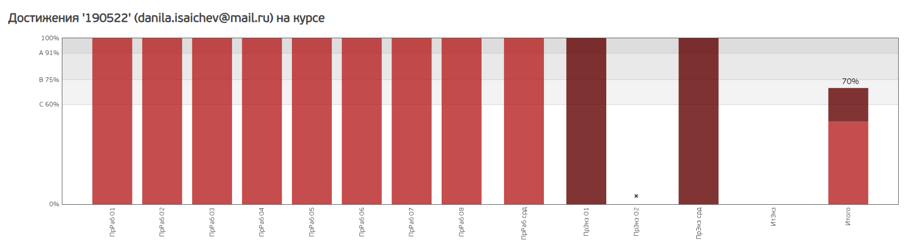
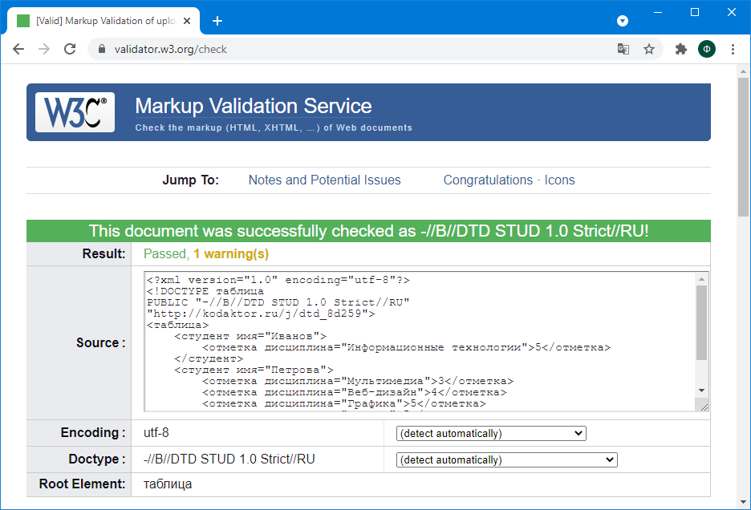
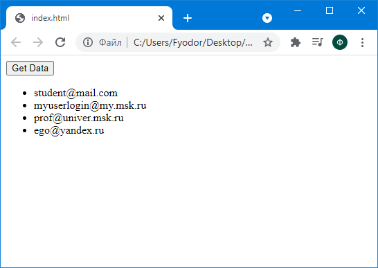
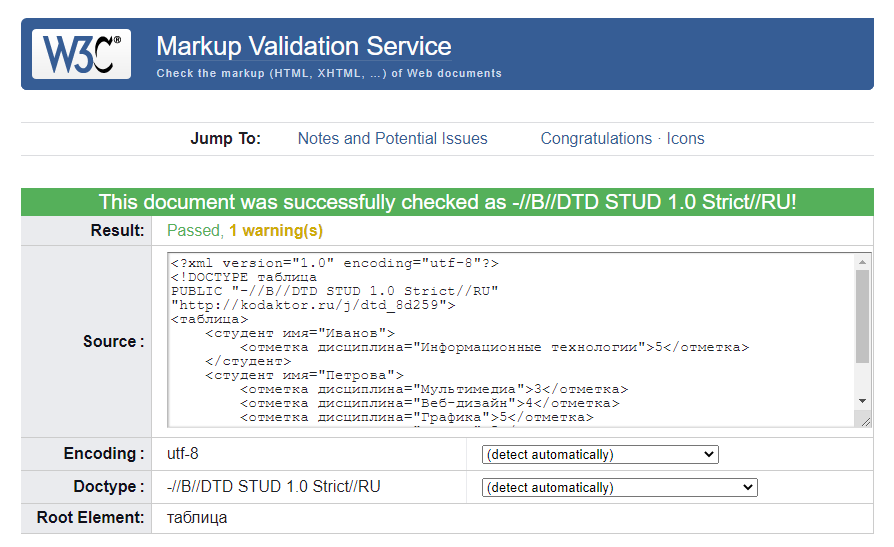
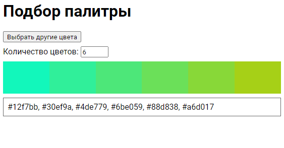
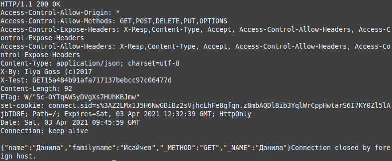
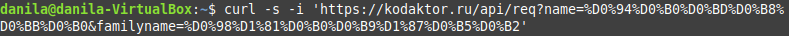
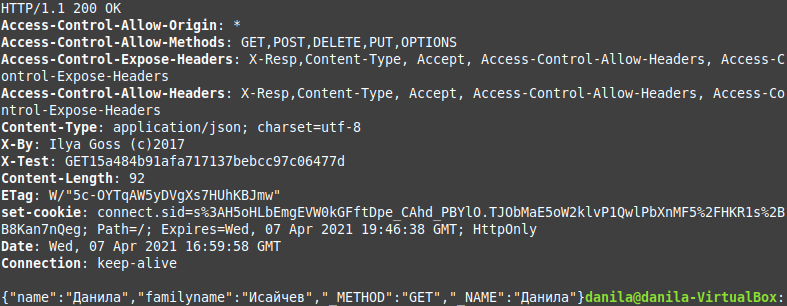
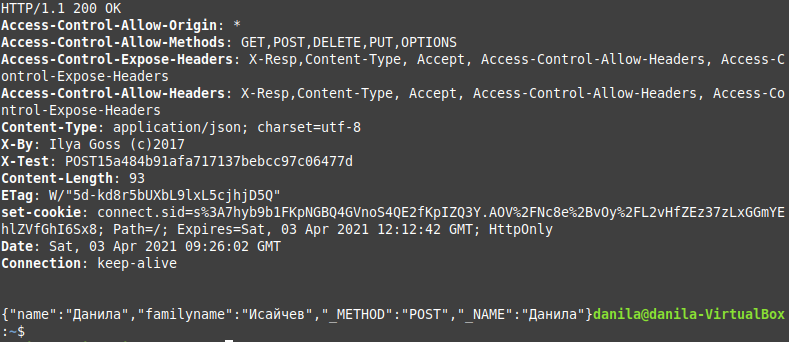

Результаты прохождения курса на OpenEdu
Приложение вычисляющее колличество рублей в N долларах
Веб-проектирование и веб-языки
Лабораторные работы
Тема 1. Языковые средства веб-технологий на основе XML и CSS и развёртывание среды разработки компонентов аппаратно-программных комплексов
1. Представьте свои текущие знания в области HTML в виде набора тегов (правильно сформированного XML-документа)
2. Осуществите рефакторинг DTD для данного документа, уменьшив количество повторяющихся инструкций
XML-документ DTD3. Рассмотрите документ Статистика посещений страницы (https://kodaktor.ru/g/08092017_stats). Основываясь на нём, разработайте язык для описания посещений некоторого URL, т.е. создайте DTD и валидный документ.
XML-документ DTD4. Разработайте или сгенерируйте схему (XML Schema) для документа и осуществите её валидацию с помощью инструмента типа xmlvalidation.com.
XML-документ DTDВалидация документа:
Инвариантные самостоятельные работы
Тема 1. Создание рабочего пространства, регистрация репозитория Git в качество портфолио, анализ, обоснование выбора и настройка выбранных для работы аппаратно-программных комплексов, современных инструментальных средств удалённого доступа и веб-технологий
Рабочее пространство разработчика может состоять из следующих компонентов:
- Браузер Google Chrome, Chromium, в т.ч. нестабильные версии для разработчиков ( https://www.google.com/intl/ru_ru/chrome/, https://www.chromium.org/ )
- Браузеры Firefox, Edge, в т.ч. нестабильные версии для разработчиков
- Node.js (LTS и Current версии)
- Локальный веб-сервер XAMMP или аналогичный
- Система контроля версий Git (https://git-scm.com/)
- Редактор кода Visual Studio Code (https://code.visualstudio.com/)
- Утилита cURL
- Клиент telnet (для Windows - можно использовать PuTTY или стандартный клиент)
- SSH-клиент (для Windows - можно использовать PuTTY или PowerShell)
Настройка
Git: необходимо указать имя и адрес электронной почты:
git config --global user.email “mail@example.com”
git config --global user.name “username”Тема 2. Настройка программного обеспечения для управления зависимостями в веб-проекте
Для управления зависимостями в проектах, разрабатываемых с помощью Node.js, используются менеджеры пакетов npm и yarn.
Менеджер пакетов npm входит в состав Node.js.
Для установки Yarn необходимо выполнить команду:
npm install yarn -gПосле её выполнения можно проверить установку Yarn путём выполнения команды для вывода установленной версии:
yarn -vТема 3. Разработка приложения для асинхронного считывания данных из JSON и вывода в веб-документ путём нативной модификации дерева DOM
Данные JSON получены по адресу https://kodaktor.ru/j/users.
Данные считываются с помощью fetch. Модификация дерева DOM происходит путём вызова функции appendChild.
Скриншот приложения:
Код приложения (фрагмент script):
document.querySelector('#btn').onclick = async () => {
let response = await fetch('https://kodaktor.ru/j/users');
data = await response.json();
data.users.forEach(user => {
let ul = document.querySelector('#users');
let li = document.createElement('li');
li.appendChild(document.createTextNode(user.login));
ul.appendChild(li);
});
}Тема 4. Настройка линтера и иных средств мониторинга корректности программного год
Настройка линтера eslint для Visual Studio Code:
1. Установка eslint
npm install -D eslint2. Установка плагинов eslint
npm install -D eslint-config-airbnb-base eslint-plugin-import3. Создание конфигурационного файла .eslintrc.yml
extends:
- 'airbnb-base'
env:
node: true
browser: true4. Установка плагина ESLint

Исправление кода с учётом рекомендаций линтера:


Вариативные самостоятельные работы
Тема 1. Экспериментальная проверка корректности документов (валидация) на языках разметки
Валидация XML-документов позволяет проверить, что документ является синтаксически верным (правильно сформированным, well-formed) и валидным относительно определённой структуры (схемы).
Схема документа - DTD (Document Type Definition).
Проверка синтаксиса и валидация относительно DTD может быть произведена с помощью сервиса валидации W3C: https://validator.w3.org/.
Тема 2. Подготовка материалов для выступления по функциональному программированию на языке JavaScript
Функциональное программирование — парадигма программирования, в которой процесс вычисления трактуется как вычисление значений функций в математическом понимании последних (в отличие от функций как подпрограмм в процедурном программировании).
Принципы функционального программирования:
- чистые функции;
- иммутабельность;
- ссылочная прозрачность;
- функции как объекты первого класса;
- функции высшего порядка;
- рекурсия.
Чистыми называют функции, которые не имеют побочных эффектов ввода-вывода и памяти (они зависят только от своих параметров и возвращают только свой результат). Чистые функции для одних и тех же аргументов возвращают одинаковый результат.
Пример чистой функции:
function multuply(a, b) {
return a * b;
}Иммутабельность - невозможность изменения сущности.
Пример функции:
function slugify(str) {
return str.toLowerCase().trim().split(' ').join('-');
}
let str = 'some url text';
slugify(str);Приведённые в коде функции позволяют создать функцию для преобразования строки, не меняющую исходную строку.
Если функция неизменно возвращает один и тот же результат для одних и тех же передаваемых ей входных значений, она обладает ссылочной прозрачностью.
Идея восприятия функций как объектов первого класса заключается в том, что такие функции можно рассматривать как значения и работать с ними как с данными. При этом можно выделить следующие возможности функций:
- Ссылки на функции можно хранить в константах и переменных и через них обращаться к функциям.
- Функции можно передавать другим функциям в качестве параметров.
- Функции можно возвращать из других функций.
Функции высших порядков — это такие функции, которые могут принимать в качестве аргументов и возвращать другие функции.
В JavaScript стандартные методы массивов filter, map и reduce принимают в качестве аргументов функции.
Тема 3. Проектирование сценария для подбора цветового оформления веб-документа
Сценарий реализован с использованием библиотеки chroma.js.
Шкала показывается от двух случайно выбранных цветов, которые генерируются с помощью метода chroma.random(). Для создания шкалы используется метод chroma.scale(colors).
Тема 4. Подготовка материалов для выступления по настройке линтера кода
ESLint - это статический анализатор кода, который может находить синтаксические ошибки, баги и неточности форматирования.
Для работы ESLint необходимо установить Node.js и npm.
Настройка линтера eslint для Visual Studio Code:
1. Установка eslint
npm install -D eslint2. Установка плагинов eslint
npm install -D eslint-config-airbnb-base eslint-plugin-import3. Создание конфигурационного файла .eslintrc.yml
extends:
- 'airbnb-base'
env:
node: true
browser: true4. Установка плагина ESLint

Исправление кода с учётом рекомендаций линтера:


Серверные веб-техологии
Лабораторные работы
Тема 1. Протоколы веба и серверные веб-технологии на платформе Node.js
Моделирование взаимодействия «клиент-сервер» с помощью программы telnet и программы curl
Подготовка данных для отправки запроса:
Данила: %D0%94%D0%B0%D0%BD%D0%B8%D0%BB%D0%B0
Исайчев: %D0%98%D1%81%D0%B0%D0%B9%D1%87%D0%B5%D0%B2
Отправка запроса с помощью telnet
GET запрос

Ответ на GET запрос
POST запрос

Ответ на POST запрос

Отправка запроса с помощью cURL
GET запрос
Ответ на GET запрос
POST запрос

Ответ на POST запрос
Создание простого веб-сервера на основе Node.js
Пример ответа сервера:
{
"date": "16.06.2021 18:07:23"
}Тема 2. Использование серверных веб-технологий на платформе PHP
Развёртывание стека LAMP
Часть I. Развёртывание PHP/FPM + NGINX


Часть II

Разработка на PHP с помощью GD2 графического интерфейса визуализации данных, полученных с помощью сетевого интерфейса

Инвариантные самостоятельные работы
Тема 1. Проектирование CRUD для серверного веб-приложения
Реализован REST API для выполнения операций CRUD в базе данных MongoDB.
Приложение реализовано с использованием Express, bodyParser, Mongoose.
Реализованы следующие операции:
GET /products - получение списка продуктов
POST /products/new - добавление нового продукта
POST /products/update/:id - обновление информации о продукте по ID
POST /products/delete/:id - удаление информации о продукте по ID
При отправке запросов для добавления и обновления продукта информация о нём передаётся в теле POST-запроса.
Сервер возвращает ответ - статус выполнения операции в формате JSON. Пример ответа сервера (добавление данных):
{
"status": "success"
}Пример ответа сервера на GET-запрос:
[
{
"amount": {
"number": 32,
"unit": "kg"
},
"_id": "60e4268f46a5bd73485414f0",
"name": "Apples",
"type": "Fruits"
},
{
"amount": {
"number": 16.25,
"unit": "kg"
},
"_id": "60e42ad546a5bd73485414f1",
"name": "Bananas",
"type": "Fruits"
},
{
"amount": {
"number": 24.5,
"unit": "kg"
},
"_id": "60e42b1046a5bd73485414f2",
"name": "Strawberries",
"type": "Berries"
}
]Тема 2. Проектирование приложения на основе фреймворка Symphony
Приложение реализует API для выполнения арифметических операций.
Маршруты описаны в файле routes.yaml.
Контроллер реализован в файле CalcController.php.
Ответ сервера при выполнении запроса по маршруту /calc/add/2/3:
{
"result": 5
}Ответ сервера при выполнении запроса по маршруту /calc/substract/5/7:
{
"result": -2
}Ответ сервера при выполнении запроса по маршруту /calc/multiply/7/5:
{
"result": 35
}Ответ сервера при выполнении запроса по маршруту /calc/divide/5/7:
{
"result": 0.7142857142857143
}Тема 3. Разработка базы данных на MongoDB
Для разработки базы данных на MongoDB можно использовать MongoDB Cloud.
Этапы разработки базы данных:
- создание базы данных
- создание коллекций
- добавление данных
MongoDB не требует определения схемы документа, что позволяет вносить изменения в структуру документа при добавлении или редактировании данных.
Этапы создания базы данных в MongoDB Cloud:
- создание организации (organization)
- создание проекта (project)
- создание кластера (cluster) и базы данных с помощью MongoDB Atlas
- добавление данных с помощью MongoDB Atlas, MongoDB Compass или веб-приложения
Тема 4. Подготовка виртуального сервера или деплой-платформы для публикации веб-ресурса на основе Ghost.js
Ghost.js можно установить с помощью Docker-контейнера.
Для установки контейнера необходимо выполнить команду:
docker pull ghostДля запуска Ghost необходимо выполнить команду:
docker run -d --name some-ghost -e url=http://localhost:3001 -p 3001:2368 ghostПосле этого Ghost будет доступен по адресу server_ip:3001.


Вариативные самостоятельные работы
Тема 1. Подготовка сообщения и мастер-класса по сравнению Rest API и RPC
REST API
REST (Representational State Transfer - передача состояния представления) — архитектурный стиль взаимодействия компонентов распределённого приложения в сети.
Ограничения для построения REST-приложений по Филдингу:
- Модель клиент-сервер
- Отсутствие состояния
- Кэширование
- Единообразие интерфейса
- Слои
- Код по требованию
Преимущества REST-приложений:
- Надёжностть
- Производительность
- Масштабируемость
- Прозрачность системы взаимодействия
- Простота интерфейсов
- Портативность компонентов
- Лёгкость внесения изменений
- Способностью эволюционировать, приспосабливаясь к новым требованиям
PRC
PRC (Remote Procedure Call - удалённый вызов процедур) — класс технологий, позволяющих программам вызывать функции или процедуры в другом адресном пространстве (на удалённых узлах, либо в независимой сторонней системе на том же узле).
Идея вызова удалённых процедур состоит в расширении механизма передачи управления и данных внутри программы, выполняющейся на одном узле, на передачу управления и данных через сеть. Средства удалённого вызова процедур предназначены для облегчения организации распределённых вычислений и создания распределенных клиент-серверных информационных систем.
Характерными чертами вызова удалённых процедур являются:
- асимметричность, то есть одна из взаимодействующих сторон является инициатором;
- синхронность, то есть выполнение вызывающей процедуры приостанавливается с момента выдачи запроса и возобновляется только после возврата из вызываемой процедуры.
С точки зрения разработки веб-решений можно сравнить REST и RPC следующим образом:
Передача данных запроса
REST: в URL, в GET-параметрах, в HTTP-заголовках, в теле запроса
RPC: в теле запроса
Передача данных ответа
REST: в HTTP-коде ответа, в HTTP-заголовках, в теле ответа
RPC: в теле ответа
Тема 2. Подготовка выступления и мастер-класса по эволюции стандартов PSR
PSR (PHP Standarts Recommendations) - это набор рекомендаций для PHP-разработчиков.
- PSR-0 – Стандарт автозагрузки
- PSR-1 – Базовый стандарт оформления кода
- PSR-2 – Рекомендации по оформлению кода
- PSR-3 – Интерфейс протоколирования
- PSR-4 – Улучшенная автозагрузка
PSR-0: Autoloading Standard описывает обязательные требования, которых необходимо придерживаться для взаимодействия с автозагрузчиком. Стандарт устарел и заменён PSR-4.
PSR-4: Autoloading Standard описывает спецификацию автозагрузки классов из файлов. Он полностью совместим и может использоваться в дополнение к любому другому стандарту автозагрузки, включая PSR-0. Стандарт также описывает, где разместить файлы, которые будут автоматически загружены в соответствии со спецификацией. Данный стандарт используется по умолчанию в Composer.
PSR-3: Logger Interface описывает общий интерфейс для библиотек логирования.
Стандарты стиля кодирования:
- PSR-1: Basic Coding Standard
- PSR-12: Extended Coding Style
PSR-1 включает в себя то, что следует рассматривать как стандартные элементы кодирования, необходимые для обеспечения высокого уровня технической совместимости кода на языке PHP.
PSR-12 расширяет, расширяет и заменяет PSR-2 и требует соблюдения PSR-1, основного стандарта кодирования.
PSR-5: PHPDoc Standard даёт полное и формальное определение стандарта PHPDoc.
Тема 3. Подготовка презентации и мастер-класса по сравнению характеристик MongoDB и Cassandra
Apache Cassandra — распределённая система управления базами данных, относящаяся к классу NoSQL-систем и рассчитанная на создание высокомасштабируемых и надёжных хранилищ огромных массивов данных, представленных в виде хэша.
MongoDB
Имеется поддержка индексов. Система может работать с набором реплик, то есть содержать две или более копии данных на различных узлах. Система масштабируется горизонтально, используя технику сегментирования объектов баз данных — распределение их частей по различным узлам кластера. Она может быть использована в качестве файлового хранилища с балансировкой нагрузки и репликацией данных. Может работать в соответствии с парадигмой MapReduce. Поддерживается JavaScript в запросах, функциях агрегации. Поддерживаются коллекции с фиксированным размером. Имеется поддержка транзакций, удовлетворяющих требованиям ACID.
Apache Cassandra
Cassandra реализует распределённую хэш-систему, что обеспечивает практически линейную масштабируемость при увеличении объёма данных. Использует модель хранения данных на базе семейства столбцов. Относится к категории отказоустойчивых СУБД: помещённые в базу данные автоматически реплицируются на несколько узлов распредёленной сети или даже равномерно распределяются в нескольких дата-центрах.
Создание таблицы (коллекции)
MongoDB организует данные в базы данных (Database), где есть коллекции (Collections), в которых лежат документы (Documents). Команда use database создает экземпляр базы данных при первом вызове и изменяет контекст для вновь созданной базы данных. Коллекции создаются автоматически при добавлении первого документа в новую коллекцию.
Создание таблицы с Cassandra похоже на SQL. Одним из основных различий является отсутствие ограничений целостности (например, NOT NULL), но это входит в зону ответственности приложения, а не NoSQL базы данных.
Добавление данных
В целом выражение INSERT в Cassandra выглядит очень похоже на аналогичное в SQL.
Несмотря на то, что MongoDB является NoSQL базой данных, подобно Cassandra, ее операция внесения данных не имеет ничего общего с семантическим поведением в Cassandra.
Выражение SELECT в Cassandra похоже на аналогичное в SQL.
В MongoDB основным методом создания запросов является метод db.collection.find().
Редактирование данных
В Cassandra есть выражение UPDATE, аналогичное SQL. UPDATE имеет ту же семантику UPSERT, подобно INSERT.
В MongoDB операция update() может полностью обновить существующий документ или обновить только определенные поля.
Удаление данных
Выражение DELETE в Cassandra аналогично SQL.
В MongoDB есть следующие операции для удаления документов: deleteOne(), deleteMany() и remove().
Удаление таблицы (коллекции)
Выражение DROP TABLE в Cassandra аналогично SQL.
В MongoDB для удаления коллекции используется операция drop().